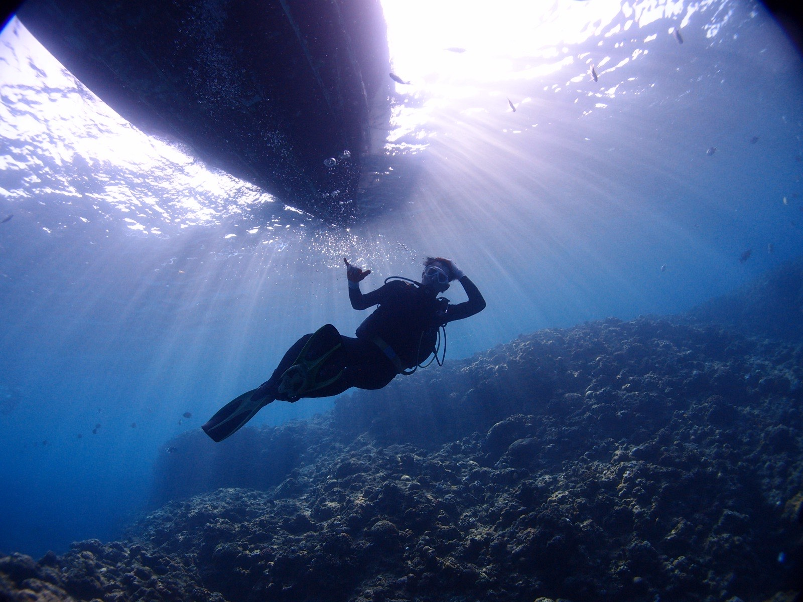

金融教育・資産形成サポート
資産形成の基礎から、その後の運用まで。 お金の不安をなくすための知識と、続けるためのサポートをご提供します。
目指すのは、「投資信託を学ぶ」が当たり前の世の中。
個人の方と、法人・事業者の方で、ご案内する内容が異なります。
個人の方には、見極めた知識を。法人の方には、見極めた選択肢を。
立場は違っても、お届けしたいものは同じです。「確かなものを、見極めて届ける」——それが知上会の仕事です。
資産形成の基礎から、長期の運用を乗りこなすまで。生涯にわたって伴走します。
資産形成の基礎／長期運用の伴走／質問への回答／情報提供／ラジオ ほか伴走サポートは0円。セミナーと継続的な個別相談は有料です。
ご縁のある企業さまの課題に、確かな選択肢をお繋ぎします。コスト削減から業務支援まで、「本当に意味があるか」だけを基準に厳選したご紹介です。
電気代削減／法務相談／決済サービス／販促・PR／社会貢献 ほか初期費用を抑えて始められるものを中心に。
知上会（ちじょうかい）——「知を上げる」が、社名の由来です。お金の知識を学び、身につけ、人生の選択肢を拡げていく。そのための学びとご縁を、個人にも、法人にもお届けします。
基礎知識から、長期の資産形成を乗りこなすまで。「お金の不安」を「わかる」に変える、体系立てた学びを土台に。
学んで終わりではなく、その先も。質問への回答・情報提供・日々の連絡で、生涯にわたって伴走し続けます。
その方・その会社にとって本当に意味のあるご縁だけを厳選してお繋ぎします。省エネ・法務・決済・社会貢献まで、事業の課題も一緒に。
学生時代、お金の学びがないことの代償を、身をもって知りました。「なぜ、この分野の学びが世の中にないのか」——その問いから、知上会は始まりました。
アメリカで本場の金融教育に触れ、薬剤師を経て、2018年からお金の教育に携わっています。学びはじめの一歩から、そのあともずっと。一人ひとりに寄り添い続けることを、何より大切にしています。
「これがベスト」を常に探し続け、始めたあとも生涯サポート。お金のことだけでなく、生き方の壁にも寄り添います。
基礎知識の習得から、実際の長期運用まで。質問への回答や情報提供、日々の連絡で、あなたの「これから」に寄り添い続けます。

ニュースをひとつ選び、その背景までじっくり掘り下げる音声番組。ほぼ毎日配信しています。
お金の相談に乗る人間が、世の中を知らないままではいられない——自分への約束として続けている番組です。
初回のご相談は無料。お金のこと、事業のこと、生き方のこと。ご状況をうかがったうえで、最適な進め方をご提案します。